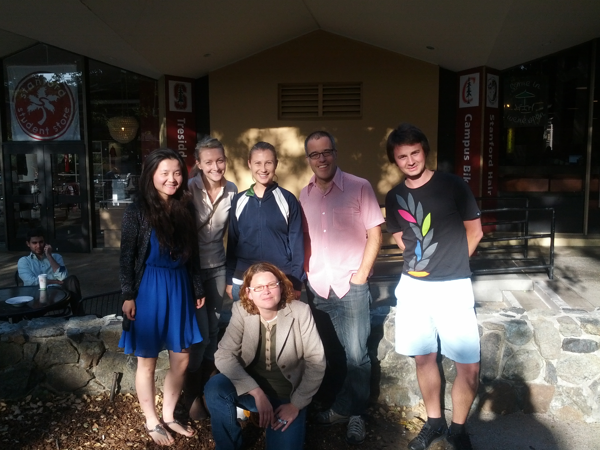

SPIF consists of a number of volunteers from within the PostDoc community at Stanford University.
Its mission is to Enrich the PostDoc Experience at Stanford. It operates under the SPIF General Guidelines. You can see details of the current and past committees below...
.From far left going clockwise: Jun Yan (Chair, 2012 - present), Katie Martucci (April 2012 - present), Kelly Storek (March 2013 - present), Ives Levesque (Chair, 2010 - 2012), Lewis John McGibbney (March 2013 - present) and Sylvia Nurnberg (May 2013 - present).
